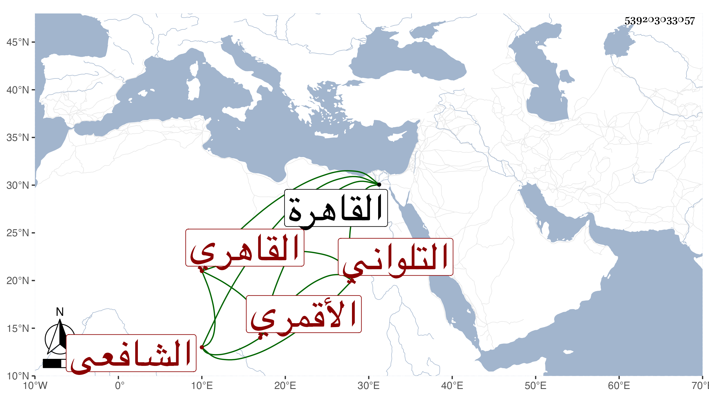

0902Sakhawi.DawLamic.ITO20230111-ara1.EIS1600.539203033057
Biography ID: 539203033057
298
أبو حامد بن علي بن عمر بن حسن بن حسين العز ويسمى محمدا بن النور التلواني الأصل القاهري الأقمري نسبة لجامع الأقمر الشافعي . ولد سنة أربع وثمانمائة بالقاهرة ونشأ بها فحفظ القرآن عند الجمال البدراني وكذا حفظ غيره وعرض واشتغل يسيرا على الشمس البوصيري في الفقه وغيره وكذا أخذ في الفقه عن والده والونائي وغيرهما والنحو عن السراج الدموشي أحد طلبة الملوي والحناوي والعز عبد السلام البغدادي وسمع على الشرف بن الكويك صحيح مسلم وأربعي النووي وغيرهما وعلى الشهاب الواسطي وغيره وأجازت له عائشة ابنة ابن عبد الهادي والجمال عبد الله الحنبلي وآخرون وحدث بأخرة بصحيح مسلم غير مرة وبرع في التعبير وقصد في ذلك وعمل فيه مقدمة أقرأها غير واحد وكذا أقرأ في العربية وصنف فيها أيضا مقدمة سماها كاشفة الكرب عن لفظ العرب وأقرأ غير ذلك ودرس بجامع المقسى وبالتنكزية نيابة عن ابن أخته البدر بن الونائي وعمل شيخ الرباط بالخانقاه البيبرسية وكان خيرا كثير التودد والانجماع والتقنع . مات في يوم السبت ثامن عشرى شوال سنة ثمانين ودفن عند أبيه بتربة العز بن جماعة رحمهم الله وإيانا .
